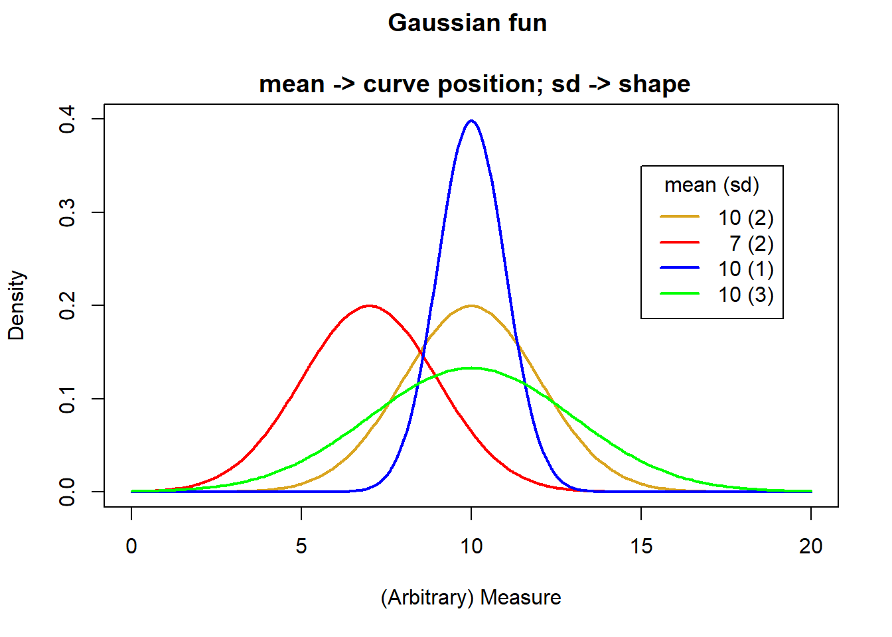
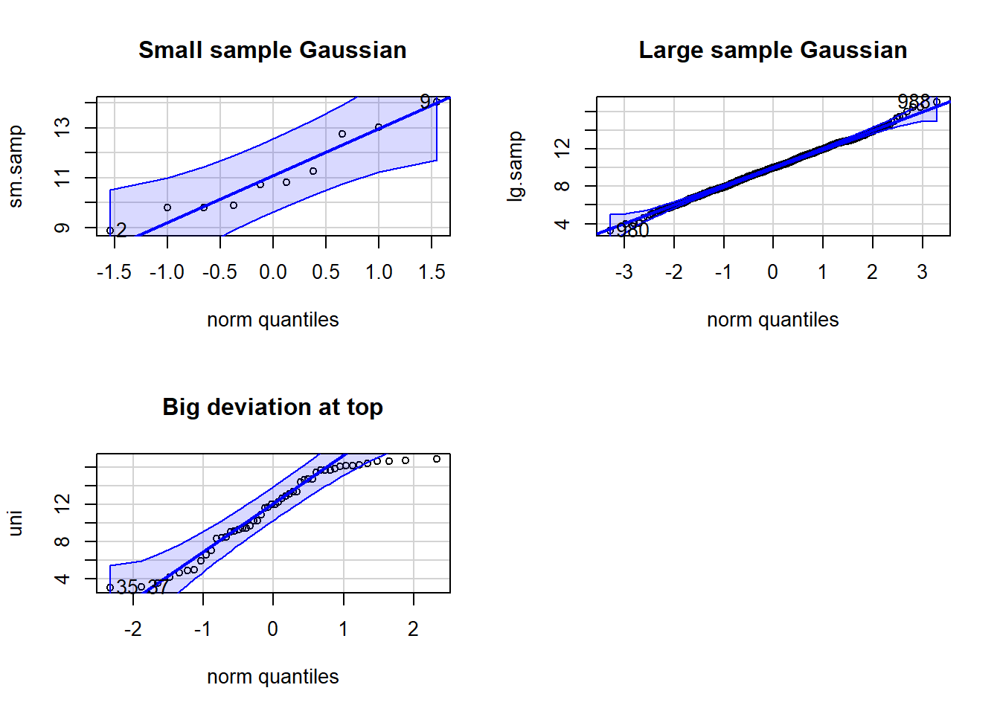
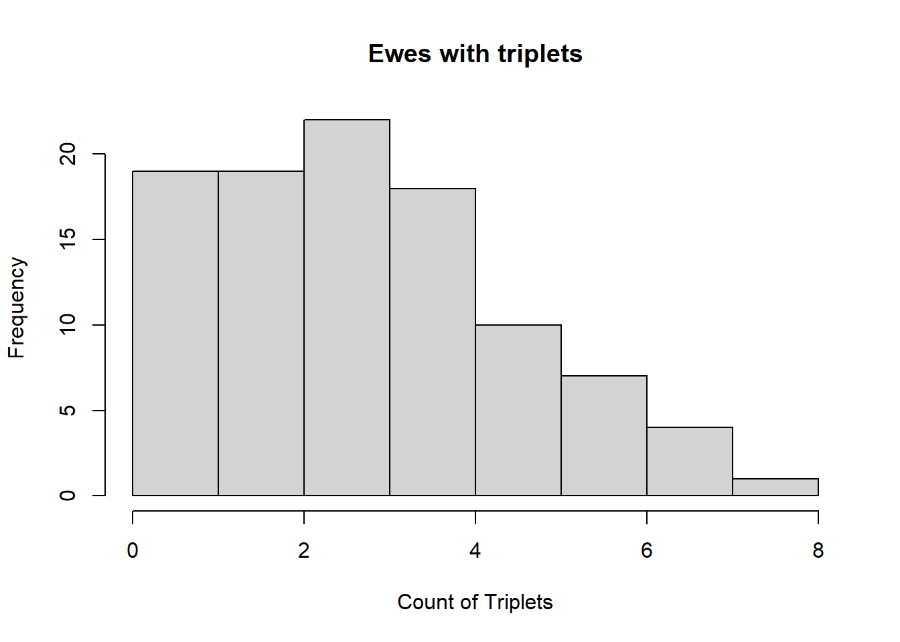
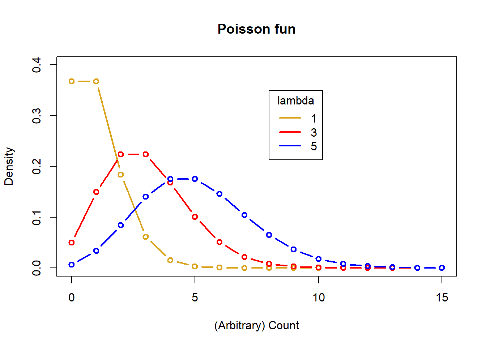
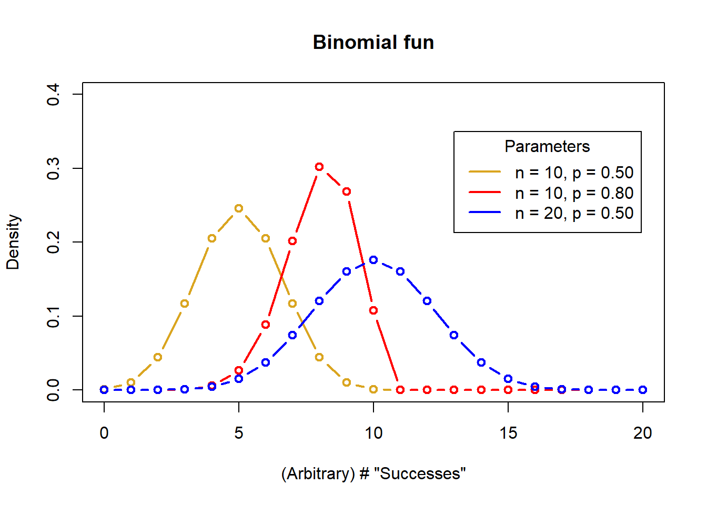

# Adult domestic cats weight approximately 4 Kg on average
# with a standard deviation of approximately +/1 0.5 Kg
# Let's simulate some fake weight data for 10,000 cats
help(rnorm) # A very useful function
help(set.seed) # If we use this, we can replicate "random data"
set.seed(42)
cats <- rnorm(n = 10000, # 10,000 cats
mean = 4,
sd = 0.5)
cats[1:10] # The first 10 cats
help(hist)
hist(x = cats,
xlab = "Cat weight (Kg)")1. Overview
I. A curve has been found representing the frequency distribution of standard deviations of samples drawn from a normal population.
II. A curve has been found representing the frequency distribution of values of the means of such samples, when these values are measured from the mean of the population in terms of the standard deviation of the sample…
-Gosset. 1908, Biometrika 6:25.
The idea of sampling underpins traditional statistics and is fundamental to the practice of statistics. The basic idea is usually that there is a population of interest, which we cannot directly measure. We sample the population in order to estimate the real measures of the population. Because we merely take samples, there is error assiociated with our estimates and the error depends on both the real variation in the population, but also on chance to do with which subjects are actually in our sample, as well as the size of our sample. Traditional statistical inference within Null Hypothesis Significance Testing (NHST) exploits our estimates of error associated with our samples. While this is an important concept, it is beyond the scope of this page to review it, but you may wish to refresh your knowledge by consulting a reference, such as Irizarry 2020 Chs 13-16.
In this page, we will briefly look at some diagnostic tools in R for examining the distribution of data, and talk about a few important distributions that are common to encounter.
On this page you will find:
Histograms
Gaussian Distribution
Poisson Distribution
Binomial Distribution
Diagnosing the distribution
Exercises
2. Histograms
The histogram is a graph type that typically plots a numeric variable (either continuous numeric values, or integers) on the x axis, and has the frequency (i.e., the count) of observations on the y axis, or sometimes the proportion of observation on the y axis. If the histogram is plotting a continuous numeric variable.
To illustrate the typical histogram for a continuous variable, try this in your example script:
Notice a few things:
The bars are the count of the number of cats at each weight on the y axis
The width of each vertical column is a (non-overlapping) range of weights - these are called "bins" and can be defined, but usually are automatically determined based on the data
For count data, each bar is usually one or more integer values, rather than a range of continuous values (as it is for cat weight above in the figure)
The shape of a histogram can be used to infer the distribution of the data
Remember the concept of population versus sample? Well, let's assume there are only 10,000 cats in the whole world and we just measured the whole population (usually not possible, remember). What if we tried to estimate the real mean of our population from a sample? The theory is that our sample mean would be expected to differ from the real population mean randomly. If we did a bunch of samples, most of the guesses would be close to the real population mean and less would be farther out, but all of these sample means would be expected to randomly vary, either less than or greater than the true populatiuon mean. We can examine this with a simulation of samples.
Try this in your example script:
# simulation of samples
help(sample) # randomly sample the cats vector
help(vector) # Initialize a variable to hold our sample means
# We will do a "for loop" with for()
mymeans <- vector(mode = "numeric",
length = 100)
mymeans # Empty
for(i in 1:100){
mysample <- sample(x = cats, # Takes a random sample
size = 30)
mymean[i] <- mean(mysample) # stores sample mean in ith vector address
}
mymean # Our samples
hist(x = mymean,
xlab = "Mean of samples",
main = "100 cat weight samples (n = 30/sample)")
abline(v = mean(mymean), col = "red", lty = 2, lwd = 2)Notice a few things (NB: your results might look slightly different to mine - remember these are random samples):
The samples vary around the true mean of 4.0 Kg
Most of the samples are pretty close to 4.0, fewer are farther away
The mean of the means is close to our true population mean
Try our simulation a few more times, but vary the settings. How does adjusting the sample size (say up to 100 or down to 10)? How about the number of samples (say up to 1000 or down to 10)?
3. Gaussian distribution
The Gaussian distribution is sometimes referred to as the Normal distribution. This is not a good practice: do not refer to the Gaussian distribution as the Normal distribution. Referring to the Gaussian distribution as the normal distribution implies that Gaussian is "typical", which is patently untrue.
The Gaussian distribution is the classic "Bell curve" shaped distribution. It is probably the most important distribution to master, because of its importance in several ways:
We expect coninuous numeric variables that "measure" things to be Gaussian (e.g., human height, lamb weight, songbird wing length, Nitrogen content in legumes, etc., etc.)
Example data: length of chicken beaks in mm
[1] 19.1 19.5 16.5 20.9 18.7 20.9 21.4 22.1 18.8 21.0 16.6 18.4 18.3 15.2 20.1 20.4 [17] 19.3 21.5 18.5 17.3For linear models like regression and ANOVA, we assume the residuals (the difference between each observation and the mean) to be Gaussian and we often must test and evaluate this assumption
The Gaussian is described by 2 quantities: the mean and the variance
Try this in your example script:
# Data
(myvar <- c(1,4,8,3,5,3,8,4,5,6))
# Mean the "hard" way
(myvar.mean <- sum(myvar)/length(myvar))
# Mean the easy way
mean(myvar)
# Variance the "hard" way
# (NB this is the sample variance with [n-1])
(sum((myvar-myvar.mean)^2 / (length(myvar)-1)))
# Variance the easy way
var(myvar)
# Std dev the easy way
sqrt(var(myvar))3.1 Gaussian Histograms
We can describe the expected perfect (i.e., theoretical) Gaussian distribution based just on the mean and variance. The value of this mean and variance control the shape of the distribution.
Gaussian Parameters = \(N(\overline{x}, S^2)\)
Sample mean = \(\overline{x}\) = \(\frac{x_{1}+x_{2},+…x_{n}}{n}\)
Sample variance = \(S^2\) = \(\frac{\sum(x_{i}-\overline{x}^2}{n-1}\) = \((std.dev.)^2\)
Sample size = \(n\)
Try this in your example script:
# 4 means
(meanvec <- c(10, 7, 10, 10))[1] 10 7 10 10# 4 standard deviations
(sdvec <- c(2, 2, 1, 3))[1] 2 2 1 3# Make a baseline plot
x <- seq(0,20, by = .1)
# Probabilities for our first mean and sd
y1 <- dnorm(x = x,
mean = meanvec[1],
sd = sdvec[1])
# Baseline plot of 1st mean and sd
plot(x = x, y = y1, ylim = c(0, .4),
col = "goldenrod",
lwd = 2, type = "l",
main = "Gaussian fun
\n mean -> curve position; sd -> shape",
ylab = "Density",
xlab = "(Arbitrary) Measure")
# Make distribution lines
mycol <- c("red", "blue", "green")
for(i in 1:3){
y <- dnorm(x = x,
mean = meanvec[i+1],
sd = sdvec[i+1])
lines(x = x, y = y,
col = mycol[i],
lwd = 2, type = "l")
}
# Add a legend
legend(title = "mean (sd)",
legend = c("10 (2)", " 7 (2)",
"10 (1)", "10 (3)"),
lty = c(1,1,1,1), lwd = 2,
col = c("goldenrod", "red", "blue", "green"),
x = 15, y = .35)
3.2 Q-Q Plots
It is very often that you might want a peek or even test whether data are Gaussian. This might be in a situation when looking at, for example, the residuals for a linear model to test whether they adhere to the assumption of a Gaussian distribution. In that case, a common diagnostic graph to construct is the quantile-quantile, or "q-q"" Gaussian plot.
The q-q Gaussian plot your data again the theoretical expectation of the "quantile", or percentile, were your data perfectly Gaussian (a straight, diagonal line). Remember, samples are not necessarily expected to perfectly conform to Gaussian (due to sampling error), even if the population from which the sample was taken were to be perfectly Gaussian. Thus, this is a way to confront your data with a model, to help be completely informed. The degree to which your data deviates from the line (especially systematic deviation at the ends of the line of expectation), is the degree to which is deviates from Gaussian.
Try this in your example script:
library(car) # Might need to install {car}Loading required package: carData# Set graph output to 2 x 2 grid
# (we will set it back to 1 x 1 later)
par(mfrow = c(2,2))
# Small Gaussian sample
set.seed(42)
sm.samp <- rnorm(n = 10,
mean = 10, sd = 2)
qqPlot(x = sm.samp,
dist = "norm", # C'mon guys, Gaussian ain't normal!
main = "Small sample Gaussian")[1] 9 2# Large Gaussian sample
set.seed(42)
lg.samp <- rnorm(n = 1000,
mean = 10, sd = 2)
qqPlot(x = lg.samp,
dist = "norm",
main = "Large sample Gaussian")[1] 988 980# Non- Gaussian sample
set.seed(42)
uni <- runif(n = 50,
min = 3, max = 17)
qqPlot(x = uni,
dist = "norm",
main = "Big deviation at top")[1] 35 37par(mfrow = c(1,1))
4. Poisson
Life is good for only two things, discovering mathematics and teaching mathematics. -Siméon-Denis Poisson
The description of Poisson distribution was credited to Siméon-Denis Poisson, was a (very, very) passionate theoretical mathemetician. The classic example for use is for count data, where famously it was exemplified by the number of Prussian soldiers who were killed by being kicked by a horse in a particular year.
The Poisson distribution:
Count data of discrete events, objects etc.
Integers, for example the number of beetles caught each day in a pitfall trap:
> rpois(20, 4) [1] 5 0 2 7 7 5 3 4 5 4 4 2 2 3 7 8 5 5 4 0Typically skewed to the right
Described by a single parameter, lambda, which describes the mean and the variance
The Poisson Parameter
Poisson distribution: \(Pois(\lambda)\)
Poisson parameter: \(\lambda = \overline{x} = S^2\)
Sample mean = \(\overline{x}\)
Sample variance = \(S^2\)
Try this in your example data:
# E.g. (simulated) Number of ewes giving birth to triplets
# The counts were made in one year 1n 100 similar flocks (<20 ewes)
set.seed(42)
mypois <- rpois(n = 100, lambda = 3)
hist(mypois,
main = "Ewes with triplets",
xlab = "Count of Triplets")
Density plot for different Poisson lambda
# 3 lambdas
(lambda <- c(1, 3, 5))[1] 1 3 5# Make a baseline plot
x <- seq(0, 15, by = 1)
# Probabilities for our first lambda
y1 <- dpois(x = x,
lambda = lambda[1])
# Baseline plot Pois
plot(x = x, y = y1, ylim = c(0, .4),
col = "goldenrod",
lwd = 2, type = "b",
main = "Poisson fun",
ylab = "Density",
xlab = "(Arbitrary) Count")
# Make distribution lines
mycol <- c("red", "blue")
for(i in 1:2){
y <- dpois(x = x,
lambda = lambda[i+1])
lines(x = x, y = y,
col = mycol[i],
lwd = 2, type = "b")
}
# Add a legend
legend(title = "lambda",
legend = c("1", "3", "5"),
lty = c(1,1,1,1), lwd = 2,
col = c("goldenrod", "red", "blue"),
x = 8, y = .35)
5. Binomial
When faced with 2 choices, simply toss a coin. It works not because it settles the question for you. But because in that brief moment when the coin is in the air you suddenly know what you are hoping for.
The Binomial distribution describes data that has exactly 2 outcomes: 0 and 1, Yes and No, True and False, etc. (you get the idea). Examples of this kind of data include things like flipping a coin (heads or tails), successful germination of seeds (success or failure), or binary behavioral decisions (remain or disperse)
The Binomial distribution:
Data are the count of "successes"" in (binary) outcomes of a series of independent events
Data coding can be variable, but an example would be success for failure while surveying for wildlife: check this nestbox; is there at least one dormouse (Muscardinus avellanarius) in it?. Let's say you check 50 nest boxes, there is exactly 1 outcome, and the probability of occupancy is 30%.
Try this in your example script:
# dormouse presence: set.seed(42) rbinom(n = 50, # Number of "experiments", here nestboxes checked size = 1, # Number of checks, one check per nestbox prob = .3) # Probability of presence[1] 1 1 0 1 0 0 1 0 0 1 0 1 1 0 0 1 1 0 0 0 1 0 1 1 0 0 0 1 0 1 1 1 0 0 0 1 0 0 [39] 1 0 0 0 0 1 0 1 1 0 1 0Flipping a coin: 20 people 10 times each
Try this in your example script:
# Flip a fair coin: set.seed(42) rbinom(n = 20, # Number of "experiments", 20 people flipping a coin size = 10, # Number of coin flips landing on "heads" out of 10 flips per person prob = .5) # Probability of "heads"[1] 7 7 4 7 6 5 6 3 6 6 5 6 7 4 5 7 8 3 5 5Described by 2 parameters, The number of trials with a binary outcome in a single "experiment" (n), and the probability of success for each binary outcome (p).
The Binomial parameters:
Binomial distribution: \(Binom(n,p)\)
Number of trials: \(n\)
Probability of success = \(p\)
Density plot for differrent Binomial parameters
# Binomial parameters
# 3 n of trial values
(n <- c(10, 10, 20))[1] 10 10 20# 3 probability values
(p <- c(.5, .8, .5))[1] 0.5 0.8 0.5# Make a baseline plot
x <- seq(0, 20, by = 1)
# Probabilities for our first set of parameters
y1 <- dbinom(x = x,
size = n[1],
prob = p[1])
# Baseline plot Binom
plot(x = x, y = y1, ylim = c(0, .4),
col = "goldenrod",
lwd = 2, type = "b",
main = "Binomial fun",
ylab = "Density",
xlab = "(Arbitrary) # \"Successes\"")
# Make distribution lines
mycol <- c("red", "blue")
for(i in 1:2){
y <- dbinom(x = x,
size = n[i+1],
prob = p[i+1])
lines(x = x, y = y,
col = mycol[i],
lwd = 2, type = "b")
}
# Add a legend
legend(title = "Parameters",
legend = c("n = 10, p = 0.50",
"n = 10, p = 0.80",
"n = 20, p = 0.50"),
lty = c(1,1,1,1), lwd = 2,
col = c("goldenrod", "red", "blue"),
x = 13, y = .35)
6. Diagnosing the Distribution
A very common task faced when handling data is "diagnosing the distribution". Just like a human doctor diagnosing an ailment, you examine the evidence, consider the alternatives, judge the context, and take a guess.
There are statistical tests to compare data to a theoretical model, and they can be useful, but diagnosing a statistical distribution is principally a subjective endeavor. A common situtuation would be to examine the residual distribution for a regression model compared to the expected Gaussian distribution. Good practice is to have a set of steps to adhere to when diagnosing a distribution.
First, develop an expectation of the distribution, based on the type of data
Second graph the data, almost always with a historgram, and a q-q plot with a theoretical quartile line for comparison
Third, compare q-q plots with different distributions for comparison if in doubt, and if it makes sense to do so!
If the assumption of a particular distribution is important (like Gaussian residuals), try transformation and compare, e.g., log(your-data), cuberoot(your-data), or others, to the Gaussian q-q expectation.
It is beyond the intention of this page to examine all the possibilties of examining and diagnosing data distributions, but instead the intention is to alert readers that this topic is wide and deep. Here are a few good resources that can take you farther:
Vitto Ricci, Fitting distributions with R
Bill Huber, Fitting distributions to data Quick-R, Probability plots
7. Exercises
For the following exercises, run this code in your example script:
# The code below loads and prints the data frame "dat"
# Data dictionary for "dat", a dataset with different measures of 20 sheep
# weight - weight in Kg
# ked - count of wingless flies
# trough - 2 feed troughs, proportion of times "Trough A" fed from
# shear - minutes taken to "hand shear" each sheep
(dat <- data.frame(
weight = c(44.1, 38.3, 41.1, 41.9, 41.2, 39.7, 44.5, 39.7, 46.1, 39.8,
43.9, 46.9, 35.8, 39.2, 39.6, 41.9, 39.1, 32.0, 32.7, 44.0),
ked = c(9, 4, 15, 11, 10, 8, 12, 12, 6, 11,
12, 13, 8, 11, 19, 19, 12, 7, 8, 14),
trough = c(0.52, 0.74, 0.62, 0.63, 0.22, 0.22, 0.39, 0.94, 0.96, 0.74,
0.73, 0.54, 0.00, 0.61, 0.84, 0.75, 0.45, 0.54, 0.54, 0.00),
shear = c(14.0, 8.0, 14.0, 11.0, 14.0, 5.0, 9.5, 11.0, 6.5, 11.0,
18.5, 11.0, 18.5, 8.0, 8.0, 6.5, 18.5, 15.5, 14.0, 8.0)
))Do you expect "weight" to be Gaussian distributed? How about "ked"? Explain your answer for each.
Show the code to graphically diagnose and decide whether "weight" is Gaussian and explain your conclusion.
Show the code to graphically diagnose and decide whether "ked" is Gaussian and explain your conclusion. If you choose another likely distribution, test it as well and similarly diagnose.
Explore whether "trough" is Gaussian, and explain whether you expect it to be so. If not, does transforming the data "persuade it" to conform to Gaussian? Discuss.
Write a plausible practice question involving any aspect of graphical diagnosis of data distribution.